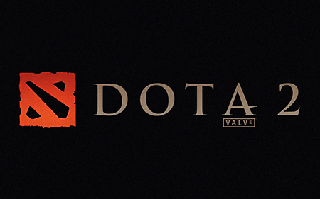
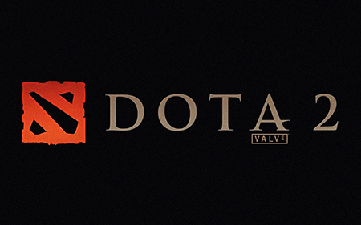

Parting Thoughts
What I Think:
- I would love to work for Valve at some point in my life.
- I literally have nothing bad to say about this company, other than that I wish they could come out with a new Half-Life already.

Valve started with Half-Life®, the first-person, sci-fi shooter game that’s won more than 50 Game of the Year and a few "Best Game Ever" awards. They expanded the Half-Life franchise with a sequel and Half-Life 2 Episodes 1 and 2. Then, they added the horror titles Left 4 Dead® and Left 4 Dead 2, the multiplayer combat franchise Team Fortress®, the #1 online action game Counter-Strike® and the award-winning puzzlers Portal™ and Portal 2. And they’re just getting warmed up.
In addition to Steam, there is Source, Valve's own state-of-the-art game engine. Its sophisticated character animation, advanced AI, real-world physics, shader-based rendering, and super extensibility have helped them create some of the most popular and good-looking games on the market for computer and consoles. Valve doesn't like to brag, but Source is considered the most flexible, comprehensive, and powerful game development environment out there. And it’s about to get even better.
When you give smart talented people the freedom to create without fear of failure, amazing things happen. Valve sees it every day. In fact, some of their best insights have come from their biggest mistakes. And they're ok with that! Since 1996, this approach has produced award-winning games, leading-edge technologies, and a groundbreaking social entertainment platform. Valve is always looking for creative risk-takers who can keep that streak alive.

Steam is Valve's direct pipeline to customers. It began as a little sleeper project—a handy tool to update Counter-Strike—and morphed pretty quickly into the world's largest online gaming platform. Steam guarantees instant access to more than 1,800 game titles and connects its 35 million active users to each other—and to us. Through Steam, fans can easily buy, play, share, modify, and build communities around Valve products as well as titles from other independent game studios. Steam is available in 237 countries and 21 different languages.


 

| Most Beloved Valve Characters | ||
|---|---|---|
| Name | Game | Description |
| Gordon Freeman | Half-Life | Gordon Freeman is the primary protagonist of Valve Software's Half-Life franchise, epitomizing the silent protagonist character archetype. |
| G-Man | Half-Life | An enigmatic character of disturbing power, the inhuman G-Man represents an unknown, trans-dimensional organization, and is a major influence on the events in the Half-Life universe. |
| Chell | Portal | Chell is the silent protagonist of Portal who is set with the task of breaking several laws of physics in order to make her way through the Aperture Science Enrichment Center. |
| GLaDOS | Portal | The Genetic Lifeform and Disk Operating System of the Aperture Science Enrichment Center in Portal. GLaDOS is a maniacal, rogue AI known for her disdain for humans and unintentionally humorous nature. |
| Spy | Team Fortress | The Spy is a character class in the Team Fortress franchise. He is a very unique character who can not only turn invisible, but can disguise himself as a member of the opposing team. He is most suited to taking out high value targets. |
| Sniper | Team Fortress | The Sniper is a character class in the Team Fortress franchise. As his name would suggest, the Sniper is more than happy to relieve your skull of the duty of holding your brains. |
| Louis | Left 4 Dead | Louis is one of the survivors in Left 4 Dead. He wears a snazzy tie, and he LOVES pills. |
| Bill | Left 4 Dead | Bearded war veteran Bill Overbeck is one of the survivors of Left 4 Dead. |